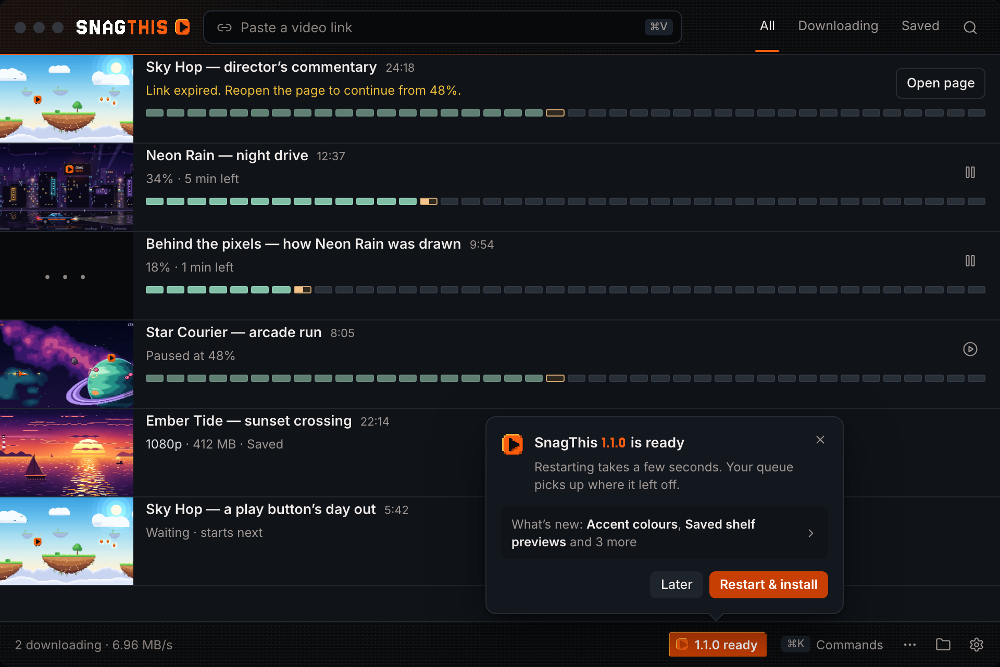
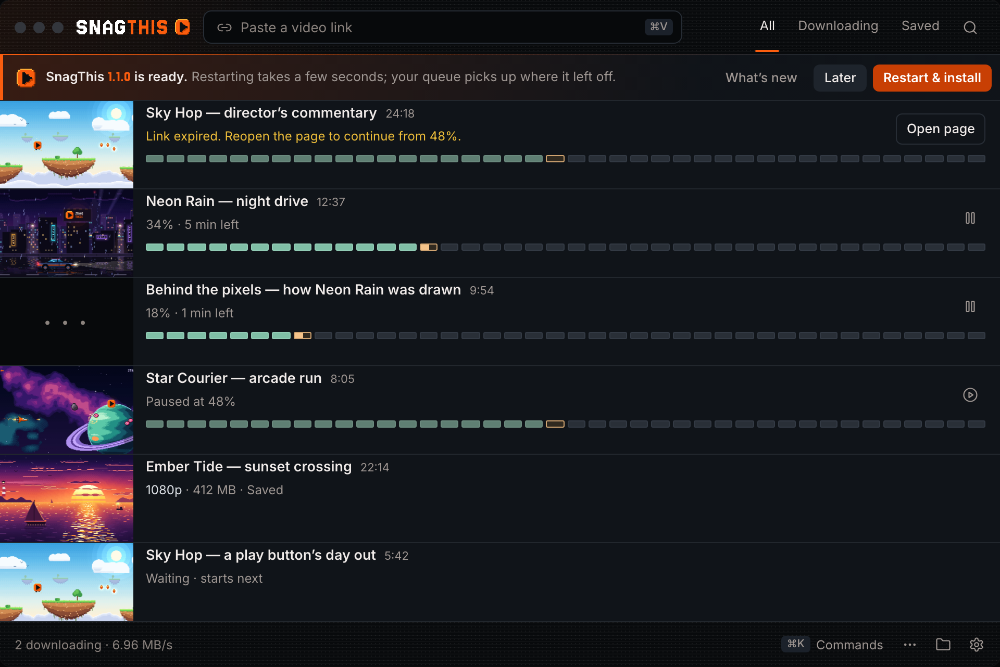
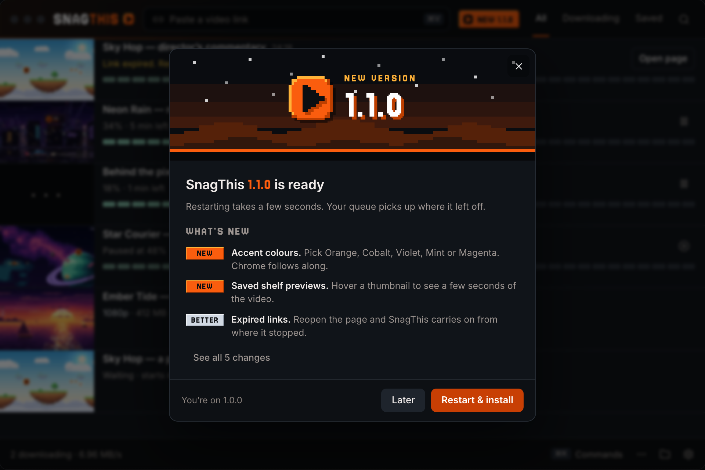
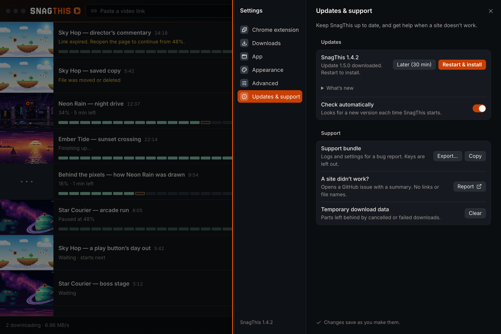

Make updates noticeable without making them noisy
Today the only update UI is the Updates row in Settings ▸ Updates & support, so people never see that an update is ready. Each direction adds a surface in the main window and covers every state: checking, up to date, downloading, ready, What’s new, blocked by active downloads, Later, installing and error. Open one to switch states (keys 1–9) and accents.
Quiet chip
Open →A pixel cartridge chip in the footer turns accent-coloured when an update is ready and opens a compact popover with the install controls. The least disruptive option: the queue never moves.

- Loud only when ready; checking and up to date appear only after a manual check.
- Risk: the footer is peripheral, so it relies on the accent chip and one blinking pixel.
More: chip at rest · downloading · blocked · error · all states


Banner
Open →A slim, dismissible bar above the queue with Restart & install inline. What’s new and error details open as a drawer. The hardest to miss, and installing takes one click.

- Uses the row’s 3px accent edge; amber for errors, green for up to date.
- Risk: takes 44px of queue height until dismissed.
More: What’s new drawer · blocked · Later · error · all states


Dedicated sheet · chosen
Open →A NEW 1.1.0 chip in the header opens a full What’s-new sheet with a pixel-art hero, the notes and the install controls. Settings keeps a one-row summary that opens the same sheet.

- Makes each release feel like an event and gives the notes room.
- Risk: one extra click before installing, and a modal.
More: chip at rest · blocked · error · all states + Settings row


0 · Current baseline
Ready to install today: only visible inside Settings ▸ Updates & support (SettingsSheet.tsx Updates row).
